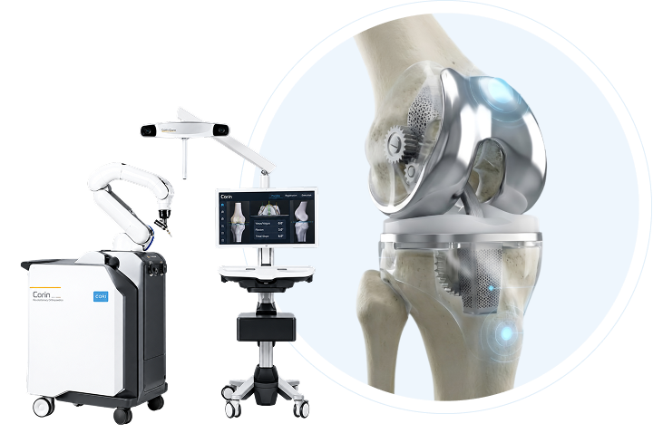

Robotic knee replacement for greater precision and a faster recovery at Apollo Spectra, Karol Bagh.
Of Experience
Joint Replacements*
Robotic Technology
Empanelled with All TPAs
Robotic knee replacement is an advanced, computer-guided procedure in which an orthopaedic surgeon uses a robotic-assisted system to plan and perform selected steps of knee replacement with a high degree of precision.
The technology uses detailed information about the individual knee to support personalised surgical planning, bone preparation, alignment and implant positioning. Real-time guidance during surgery helps the surgeon carry out the planned procedure while accounting for the patient's knee anatomy.
The robotic system does not operate independently. The orthopaedic surgeon remains in control throughout the procedure and uses the technology as an assisting tool.

Dr. Saksham Mittal is a renowned robotic knee and hip joint replacement surgeon at Apollo Spectra, Karol Bagh, with 10+ years of experience in orthopaedics. He specialises in minimally invasive robotic knee and hip replacement, keyhole arthroscopy and joint-preservation procedures.
He is also experienced in rapid recovery knee resurfacing and has successfully performed 3,000+ robotic joint replacement and arthroscopic procedures. His clinical experience includes working with institutions such as Madras Medical College, Dr. RML Hospital, Aakash Hospital and Fortis Hospital.
Robotic technology is only one part of the knee replacement journey. Specialist expertise, hospital infrastructure and coordinated support also matter when planning surgery.
Hear from patients about their experiences, care and recovery journey with our dedicated healthcare team.
Persistent knee pain does not have to leave you uncertain about the next step. Speak with our orthopaedic team to understand your knee condition and whether robotic-assisted knee replacement is appropriate for you.
Yes, robotic-assisted knee replacement is safe and widely recognized in modern orthopaedics. The robotic system provides real-time feedback and sub-millimeter precision, enabling the surgeon to preserve healthy bone, cartilage, and soft tissues.
No, the robot does not perform surgery on its own. The entire procedure is planned and carried out by the orthopaedic surgeon. The robotic arm serves as a high-precision assistive tool to guide bone preparation and implant placement according to the surgeon's plan.
Patients suffering from advanced osteoarthritis, chronic joint damage, or cartilage degeneration who experience significant pain and limited mobility may be suitable candidates. Your surgeon will assess your condition through digital imaging and clinical evaluation.
Yes, robotic technology can be utilized for both partial (unicompartmental) and total knee replacement procedures, depending on whether joint damage is restricted to a single compartment or involves multiple areas of the knee.
With robotic-assisted surgery and modern rehabilitation protocols, many patients are encouraged to stand and walk with support within 24 to 48 hours following surgery. Early mobilization helps enhance blood flow and speed up recovery.
Most patients achieve functional recovery and return to routine daily activities within 3 to 6 weeks. Complete recovery and return to vigorous activities generally take about 3 to 6 months with structured physical therapy and guided exercise.
Modern knee replacement implants typically last 15 to 25 years or longer. The enhanced accuracy in alignment and component positioning provided by robotic assistance helps minimize uneven wear, promoting implant longevity.
Yes, joint replacement surgeries, including robotic-assisted procedures, are generally eligible for coverage under standard health insurance policies. Apollo Spectra is empanelled with major TPAs and insurance providers for hassle-free cashless hospitalization.
The cost depends on factors such as single vs. bilateral surgery, partial vs. total replacement, implant category, and room type. You can connect with our team or request a callback to receive a personalized estimate tailored to your requirements.